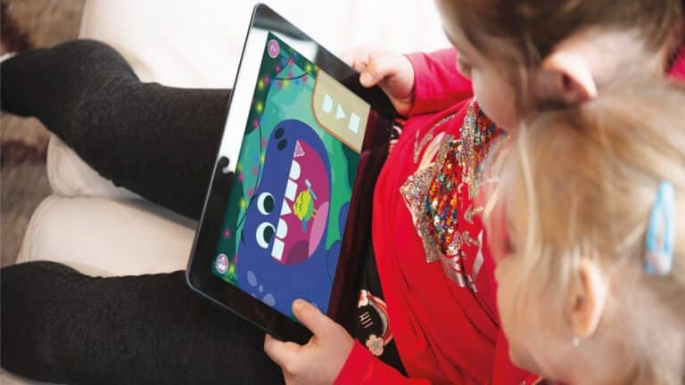

Screens, Done Well
Calm, academic screen time — best on E-ink.
Most screens are built to hook a child. A few tools genuinely teach. The whole game is telling them apart — and changing how the screen is used, not just what's on it.
The honest position
Most of what a young child needs comes from play, talk, movement and the real world — not a screen. Bright, fast, rewarding apps and videos train a child to want exactly that: more bright, more fast, more reward. That's the overstimulation problem, and it's real.
But there's a narrow, honest exception. A little calm, focused academic practice — letters, numbers, phonics — can genuinely help, if the tool is well-made and the device isn't feeding the dopamine hit.
That's why the recommendation here is an E-ink tablet. The screen is matte, slow and paper-like — no glare, no glow, none of the pull of a glossy backlit tablet. The child gets the academic training without the overstimulation. Same app, very different effect on a small nervous system.
The model worth stealing
Programmes like Alpha School (and the wider "future of education" world worth following) show what's possible: a short daily block of focused, adaptive academic work — often well under two hours — that frees the rest of the day for real life, projects and play.
The lesson isn't "more screen". It's that a small, sharp, focused dose of the right tool can do the academic job quickly — so the screen serves the childhood, instead of eating it.
Khan Academy Kids Free · No ads
Genuinely excellent and completely free — no ads, no upsells, no manipulation. Letters, numbers, phonics, early reading and drawing, all gently paced and adaptive. The strongest single starting point.
Our own number games Homegrown
We've built simple number-learning games ourselves. Honest verdict: children play for a little while and pick a few things up, but they're not the most fun — so they're a useful supplement, not the main event. We'll keep improving them and link them here.